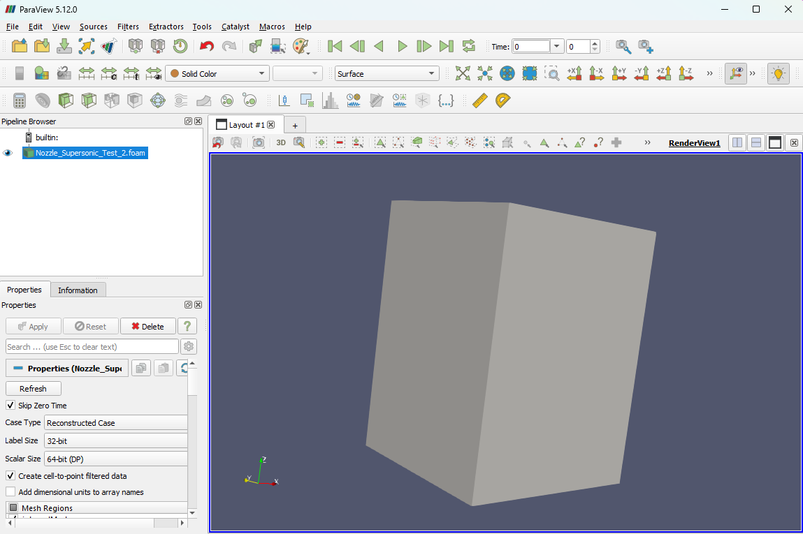

Mach 3.5 LOX/RP-1 Bell Nozzle Design and Analysis
This project follows the full engineering cycle of a high-pressure bell nozzle, from thermodynamic sizing to simulation-backed validation. I used NASA CEA data to size the geometry for a 100 bar combustion system and then translated those targets into a CAD and CFD workflow focused on exit performance at a 3 km operating altitude.
The work pushed beyond a simple render by testing solver stability, interpreting residual behavior, and thinking carefully about manufacturability for a physical print. It became a great example of how aerospace design is really an iterative loop between theory, software, and practical constraints.
Engineering Goal
Achieve a theoretical exit Mach of 3.5 with a geometry optimized for high-pressure supersonic expansion.
Key Result
Predicted exit velocity of 2450 m/s and a verified supersonic core before solver limits were reached.
Modeling
NASA CEA sizing translated into CAD geometry and a custom bell profile.
Validation
rhoSimpleFoam CFD with a hex-dominant mesh and local throat refinement.
Fabrication
Designed for additive manufacturing with an inverted print orientation.